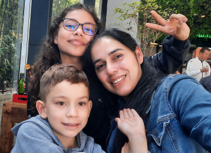

Minha família
Eu

Família
Família

Nasci em 1976, tenho 2 irmãos mais velhos, criado em um a família tradicional na região metropolitana de Curitiba. Estudei o ensino fundamental e médio em escola pública, segui a carreira militar por 3 anos em um Batalhão de Infantaria. Sou formado em Tecnico de Segurança do Trabalho, Licenciatura Plena em Matemática e Engenharia Elétrica, pós graduado em Engenharia de Segurança do Trabalho, Ergonomia e Meio Ambiente.
Sou casado (com uma esposa maravilhosa e parceira para todas as fases da vida) e tenho um lindo casal de filhos Ingrid e Nicolas, sou apaixonado por eles. Meus hobbies principais são caminhada no parque, viagens e coleção de moedas e cédulas (pra que não sabe esse último hobbie se chama Numismática. Me interesso por Astronomia, Tecnologia Espacial e Tecnologia em geral.